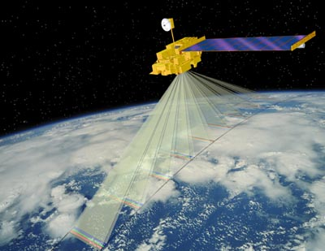
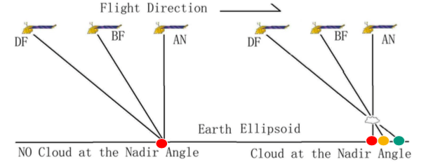
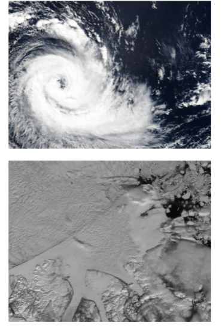
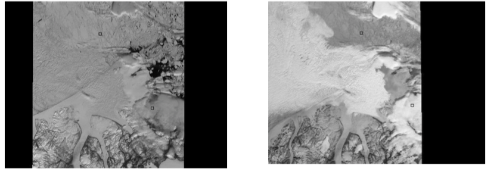
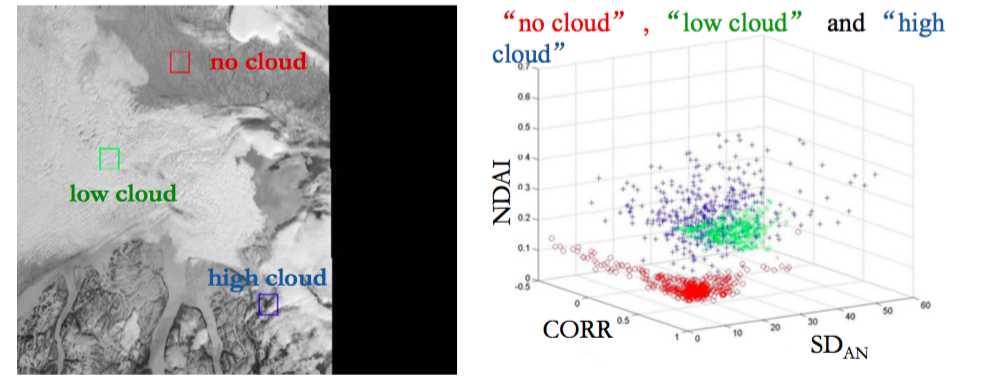

This project focuses on predicting the presence of clouds in polar regions, which is notable difficult due to the reseblence of clouds to snow from satellite images. Cloud coverage is a key feature of predictive climate models due to the cloud's ability to both act as a blanket to trap heat in the lower atmosphere as well as their ability to reflect rays from the outer atmosphere. Uncertainties about the impact of cloud radiation feedback on the global climate are among the greatest obstacles in understanding and predicting the future of Earth's climate, however the presence of cloud above snow and ice covered surfaces is particularly difficult to detect from satellite images due to the similar reflective and temperal properties of cloud and snow.
In the late 1990s, NASA launched a satellite called Terra as a part of NASA’s Earth Observing System (EOS), the goal of which is to improve the scientific understanding of global climate changes and provide the scientific basis for environmental policies. Terra was equipped with instruments including a Multi-angle Imaging SpectroRadiometer (MISR), a camera that is used to take pictures of the earth below from multiple angles. NASA's goal for this satellite was to capture images of the Earth each from multiple angles in order to increase understanding of the Earth's systems. At each location, an image is taken from 9 different angles, resulting in images of 9 separate locations. However, as the satellite moves along its path, images of each location are taken from all subequent angles (see the figure below). Further, each of these images is recorded using 4 different (443nm, 555nm, 670nm, and 865nm Near Infrared Red) wavelengths at each angle.

The MISR algorithm retrieves the cloud height and cloud movement by matching the same cloud in images obtained from three different angles. This algorithm works very well when detecting clouds over darker surfaces such as deep ocean or vegetation covered land surface, but is less efective over snow and ice covered surfaces due to the difficulty in matching.

Consider, for example, the figures presented blow. The top panel in the figure below shows a situation in which cloud is easy to detect as it cloud appears over a deep body of water, whereas the second panel displays clouds appearing over ice/snow in Greenland.

An initial approach (Shi et al. 2002), LCMC, utilizes the domain knowledge that correlations between angles are high over snow and ice covered regions but weak for regions covered by high clouds. Further, clouds are brigher than snow and ice covered surfaces in forward angles (see the figures below: the left panel corresponds to the image taken from the AN angle and the right panel corresponds to the image taken from the DF angle).

To utilize this information, this approaches focuses on identifying regions of snow or ice rather than clouds. However, this approach fails in regions where the surface is smooth (such as frozen rivers) or there are thin clouds. How could we adapt the method to rectify these issues? We could use SD to measure smoothness and forward scattering via DF to deal with thin clouds what?
The enhanced LCMC algorithn (ELCMC) thresholds 3 features based on 275m, terrain projected red radiances. Instead of utilizing the expert labels, this approach performs clustering (an example of unsupervised learning). The three features are
The correlation between different angles measured by $$CORR = \frac{r_{AF - AN} + r_{BF - AN}}{2}$$
Surface smoothness measured by $SD_{AN}$
The angular signature of the radiances from different angles: Normalized Difference Angular Index (NDAI) see Nolin, Fetterer, and Scambos (2002), measured by $$NDAI = \frac{Radiance_{DF} - Radiance_{AN}}{Radiance_{DF} + Radiance_{AN}}$$
The algorithm works be predicting that a pixel is clear of cloud (contains snow and/or ice) when our values satisfy at least one of two thresholding criteria:
$$SD_{AN} < threshold_{sd}$$
or when
$$CORR > threshold_{corr} ~~~ \text{ and } ~~~ NDAI < theshold_{ndai}$$
where the thresholding values are either fixed or adaptively chosen. If neither of these two conditions are satisfied, then the pixel is predicted to be cloudy.
